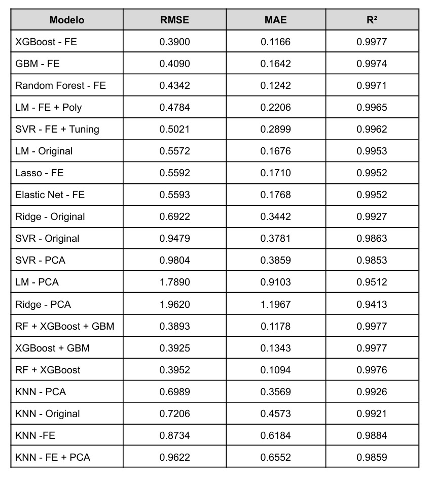

Modelo Predictivo Meteorológico

Descripción técnica
Este proyecto fue desarrollado en R como parte de la materia de Máquinas de Aprendizaje. El objetivo principal fue construir un flujo completo de Machine Learning para predecir la temperatura media diaria a partir de un dataset meteorológico histórico. El problema se abordó como una tarea de regresión, ya que la variable objetivo fue MeanTemp.
En la primera etapa se realizó el proceso KDD, enfocado en el análisis exploratorio de datos. Durante esta fase se revisó la estructura general del dataset, los tipos de variables, la presencia de valores faltantes, la distribución de la variable objetivo, el comportamiento temporal de los datos y la relación entre las variables meteorológicas. Este análisis permitió comprender mejor el conjunto de datos antes de aplicar los modelos predictivos.
Posteriormente, se entrenaron modelos base de regresión utilizando algoritmos como Regresión Lineal Múltiple, Support Vector Regression, Ridge Regression y KNN. Cada modelo fue evaluado mediante métricas como RMSE, MAE y R², con el objetivo de establecer una línea base de comparación. Además, se aplicó PCA para analizar si la reducción de dimensionalidad mejoraba el rendimiento de los modelos.
En la segunda etapa se aplicaron mejoras a los modelos mediante ingeniería de características, normalización, ajuste de hiperparámetros y nuevas variables derivadas. Se generaron características como rangos de temperatura, transformaciones de precipitación y variables cíclicas para representar patrones temporales. Después, se volvieron a entrenar y evaluar los modelos para comparar su desempeño frente a las versiones base.
Finalmente, se implementaron modelos avanzados como Random Forest, XGBoost y GBM, además de ensambles entre modelos. Estos algoritmos permitieron capturar relaciones más complejas entre las variables climáticas. Al final del proyecto se compararon todos los resultados obtenidos para identificar el modelo con mejor desempeño predictivo.
Resultados obtenidos
- KDD y análisis exploratorio del dataset meteorológico.
- Limpieza de datos y tratamiento de valores faltantes.
- Análisis de correlaciones y comportamiento temporal.
- Aplicación de PCA para evaluar reducción de dimensionalidad.
- Entrenamiento de modelos base de regresión.
- Evaluación de modelos mediante RMSE, MAE y R².
- Ingeniería de características y creación de nuevas variables.
- Ajuste de hiperparámetros para mejorar el rendimiento.
- Entrenamiento de modelos avanzados como Random Forest, XGBoost y GBM.
- Comparación final entre modelos base, modelos mejorados, modelos avanzados y ensambles.